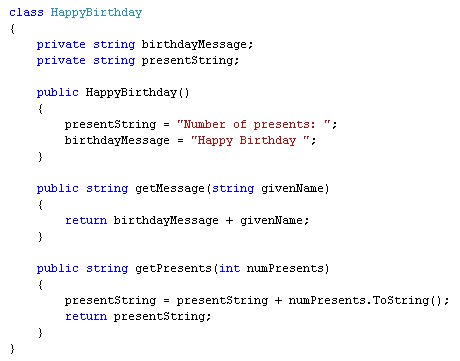
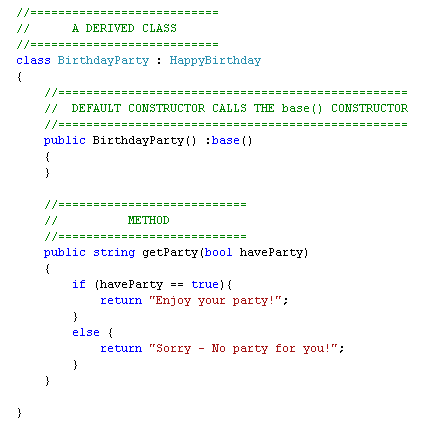
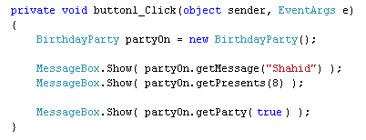

Inheritance in C# .NET
<< Part of an ongoing lesson - first part is here >>
Another important concept in Object Oriented programming is Inheritance. It's easier to show you what inheritance is through programming examples, rather than explain in words. But essentially inheritance is creating one class from another. The parent class is the main one, and your create a child class that does similar but slightly different things.
Let's see if we can't make things clearer with a programming example.
Take a look at the new version of our Happy Birthday class. It's been stripped down:

We've deleted the properties, and now have just two public Methods. The default constructor is still there, though. It just sets some default text for the two variables.
Inheritance is creating a child class from this parent. The parent is known as the base class. The child class is known as a derived class. The derived class can use all of the methods from its base class. But it will have it's own code. Here's a class derived from the above Happy Birthday class:

What we want to do is to create another class called BirthdayParty. Because the two are related, we can use Inheritance. This means that we don't have to start all over again. We can just reuse the HappyBirthday class. For example, suppose we wanted to display the following message:
Happy Birthday Shahid!
You have 8 Presents
Enjoy your Party!
We can get the first two message from the base class (HappyBirthday). But we can get the final message from the new class, BirthdayParty. Birthdays and parties are closely related. But we want to keep one separate from the other. We could then add more information about the party: number of guests, location, time, etc. But we'd add this to the derived class, instead of the base class.
Note the first line from the derived class:
class BirthdayParty : HappyBirthday
You start by typing the word class, followed by a space. You then need to come up with a name from your new class. We called ours BirthdayParty. Because we want to use some of the code from the base class, we have this:
: HappyBirthday
So to specify that this is a derived class, you type a colon ( : ). After the colon, you type the name of the base class.
The only other thing that's different is this:
public BirthdayParty() :base()
{
}
We're setting up a default constructor called BirthdayParty, the same name as the new class. This is where you can set up variables for this particular class. But this constructor knows nothing about the code from its parent class, HappyBirthday. To tell it to run the code for the parent constructor as well, we have this:
:base( )
When the programme runs, C# will initialise variables for the new derived class as well as the variables in the base class.
Here's some code that uses both classes. This is from a button on a form:

We've created a new BirthdayParty object and called it partyOn. Then comes three message boxes. The first two call the Methods from the HappyBirthday class. The final one calls the Method from the derived class, which is BirthdayParty.
Study the code and see how it works. Create a new project and try it out.
Inheritance can get very tricky, and it's difficult to know what to put in to the base class and what to put in the derived class. But it's usual to create a base class that holds general information, and a derived class that contains more information. For example, you might have an automobile class as the base class. A car class and a motorbike class could then be derived from automobile.
In the next lesson, we'll take a look at Method Overloading.